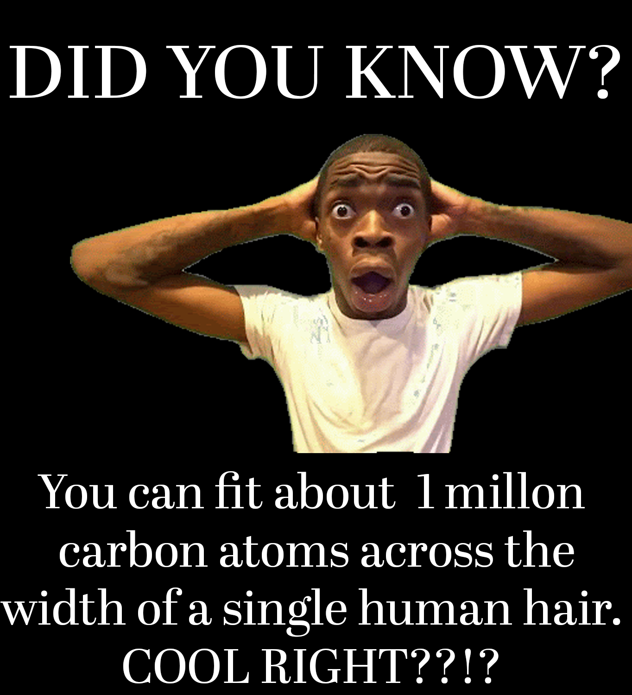

Atoms are the smallest particle of an element, as well as the building blocks of all matter. Everything is made of atoms - even yourself. They can be combined with other atoms to form molecules, but they cannot be divided into smaller parts by ordinary means.
The word atom comes from the Greek word atomos, meaning “indivisible”. The ancient Greeks were the first to think of the atom as the basic unit of all matter. It was not until the early 1800s, though, that scientists began to understand how atoms work. Atoms are far too small to see. Even the most powerful microscopes cannot visualise a single atom.
If the earth’s population of 7 billion people were the size of an atom, they would take up less than 1mm of space. There are over 100 different kinds of atoms. About 92 of them occur naturally, while the remainder are made in labs. The first new atom made by man was technetium, which has 43 protons.

New atoms can be made by adding more protons to an atomic nucleus. However, these new atoms (elements) are unstable and decay into smaller atoms instantaneously. Atoms have protons, electrons, neutrons, and the protons and neutrons form a nucleus.
When they attract each other, atoms form elements. Protons have a positive (+), electrical charge, electrons have a negative (−) electrical charge, and the neutrons, no charge. The electrons orbit around the nucleus while the protons and neutrons bond to form the nucleus.
Think of how the planets oribit round the sun. The atom’s number of protons, neutrons, and electrons determines what kind of element it is. An ordinary, neutral atom has an equal number of protons (in the nucleus) and electrons (surrounding the nucleus). Thus the positive and negative charges are balanced.
Big thank you for texts and media to:
pixabay.com, magnific.com, universetoday.com, Britannica.com, scienceholic.org, interest.com, bbc.co.uk/bitesize, Current vice president of Hamilton girls high school (Mr C. Scrimgeour).Thanks for stopping by! Hope you learned something new :)
Website made by Jomi Omoyeni.
Contact me; jom24600@my.hghs.school.nz.
*If you found texts or images that belongs to you and you haven't been given credit, deepest apologies. Please do contact me so you can be added to the credit list :).